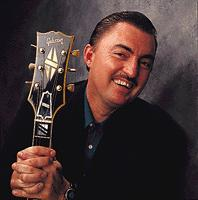

GR --- Почему ты стал играть на гитаре? Я читал, что изначально ты учился играть на гармонике, а потом переключился на гитару. Что заставило тебя это сделать?
CB --- Думаю это было вызвано необходимостью. Мне нравилось играть блюз, а на гармонике я стал учиться, наверное, потому, что она стоила дешевле. Получилось так, что я мог продолжить занятия блюзом в одной группе с Риком Эстриным (Rick Estrin), который замечательно играл на гармонике. Я немного баловался с гитарой в своей первой группе, ну я и решил попробовать, потому что играть на гитаре с Риком мне казалось хорошей мыслью. Кроме того, неплохо было бы иметь еще одну гармонику в группе, знаешь, чтобы поддержать Рика... Так что виной всему – необходимость.
GR --- Ты брал уроки? Или учился самостоятельно?
CB --- Я никогда не брал уроков. Я мог слушать и смотреть на игру множества музыкантов, ведь я вырос на побережье Сан-Франциско, где в 60-е было много мест, чтобы слушать музыку, типа Fillmore и Avalon и прочих танцевальных залов, куда ребята моложе 21 могли войти за небольшую плату, и было множество самых разных концертов. Так можно было пойти послушать Бадди Гая и Фредди Кинга, БиБи Кинга, Альберта и всех остальных. Я смотрел на них и учился. То есть уроков я не брал, но, в конце концов, пришел к тому, что прослушивание выступлений и записей больше не приводит к прогрессу, поэтому я накупил книг и стал учиться таким образом: знаешь, читать книги по теории, книги с прилагаемыми кассетами, книги по нотной грамоте. Я уверен, что занятия музыкой очень важны, и не имеет значения, сам ты учишься или берешь у кого-то уроки.
GR --- А как тебе кажется, игра на гармонике помогла тебе в изучении гитары? Помогла развить игру на слух?
CB --- Конечно же, помогла. В то время было мало литературы по игре на гармонике. Поэтому приходилось выяснять, в какой тональности звучит музыка, а потом пробовать подбирать мелодию на гармонике. Ты не мог видеть, что делаешь, и это требовало больших усилий. И это помогло. Но, конечно, на гитаре можно извлечь намного больше нот. На гармонике просто отсутствуют промежуточные ноты, надо использовать бэнды. В игре на гитаре больше подводных камней, требуется время, чтобы получше развить слух, плюс ко всему ты имеешь дело с аккордами, а не с отдельными нотами.
GR --- Ясно. Сколько времени ты тратил на занятия первые два года? Тебе все давалось естественно? Или приходилось заниматься все выходные напролет?
CB --- Я начал играть на гармонике в школе, а еще я баловался с гитарой. Скажу, что первые годы обучения определенно самые важные, и я тратил все свое свободное время, если не был занят уроками, на занятия и на игру в группе. Мне повезло с моей первой работой - я все лето был свободен. Я тратил очень много времени, практикуясь по 10 часов в день. Я и сейчас много занимаюсь. Мне кажется, важно постоянно разучивать новые вещи и постоянно повышать свой уровень.
GR --- Как много ты занимаешься сейчас?
CB --- Когда я дома, где-то от часа до четырех в день. Я пытаюсь несколько раз в неделю играть джемы по 2-3 часа, где мы просто пробуем разные песни. Сейчас я много работаю над джазом, чтобы развивать слух. Когда я на гастролях, обычно много времени на занятия не остается, поэтому, когда выдается день отдыха, играю, может, пару часов. Еще я понял, что перед выступлением всегда нужно разыгрываться. Если выходишь неразогретым, и звучать будешь соответственно...
GR --- Ты упомянул джаз... что изначально тебя привлекло к джазу? Большинство музыкантов в молодости хотят походить на Хендрикса и других музыкантов такого плана. Почему ты решил, что будешь концентрироваться главным образом на джазе?
CB --- Ну, наверное, я был не таким. Я не хотел быть как Хендрикс, я хотел быть как Бадди Гай. Наверное, и Хендрикс тоже хотел быть как Бадди Гай, не знаю. Я видел, как эти ребята играют, и я хотел делать то же самое. Мне нравилось, что они могут просто встать и выразить свои эмоции. Тогда я этого не осознавал, но в блюзе мне еще нравится то, что он - вне времени. Он не зависит от модных тенденций, и в нем глубокие традиции. Джаз, как мне кажется, - естественная производная от блюза, блюз и джаз в значительной степени пересекаются. Я слушал музыкантов типа Кенни Баррелла (Kenny Burrell) и Лу Хольтца (Lou Holts) и пытался выяснить, что это за дополнительные ноты и аккорды они используют. Это звучит как блюз, но сложнее. Когда я дошел до этой точки, мне захотелось узнать больше о музыке. Я раздобыл книгу Мики Бэйкера (Mickey Baker), в которой приводится множество хороших джазовых аккордов. В ней даются аккордовые замены и прочее. Я потом ходил на концерты этих ребят и ... знаешь, опять же, это совсем другой мир, но эти два вида музыки так похожи, что для меня это не было чем-то необычным.
GR --- Кто, помимо Бадди Гая, были твоими гитарными кумирами?
CB --- Знаешь, по-настоящему мою манеру игры изменил Чарли Крисчэн (Charlie Christian). В нашей группе в колледже был гитарист, который впоследствии стал инженером-химиком. Его кумирами были Бадди Гай и Чарли Крисчэн. Ну, мы начали играть кое-какие песни Крисчэна, вот так я и втянулся в его музыку. До этого я ничего о нем не слышал, а когда заинтересовался, начал больше и больше заниматься. Так что, Чарли Крисчэн был одним из первых моих кумиров.
GR --- Ты всегда хотел быть музыкантом? Или, может быть, в детстве хотел стать врачом или кем-то еще?
CB --- Я хотел быть учителем математики. Как-то раз в школе я увидел, как парень играл на гармонике. Мне показалось, что это звучало круто. Тогда я впервые задумался о музыке. Когда я рос, я нечасто слушал радио. Единственное, что мне приходилось слушать, – это Alvin и the Chipmunks...
GR --- Alvin и the Chipmunks?
CB --- ... Понимаешь, я не сразу увлекся музыкой, но поскольку я жил в Сан-Франциско в 60-е, когда я становился старше, я чаще и чаще знакомился с музыкантами. Мне казалось, что нужно иметь музыкальное образование, чтобы серьезно заниматься музыкой, а потом я понял, что многие из этих ребят были самоучками. Это было забавно. Наверное, я просто проснулся однажды и понял, что я музыкант. Это у меня получалось лучше всего, и я решил на этом сконцентрироваться. Нам повезло, и мы получили контракт с Alligator Records. С тех пор я занимаюсь только музыкой.
GR --- Ты ходил в колледж, получил образование?
CB --- Я изучал математику и экономику. Я никогда в своей жизни не посещал занятий по музыке.
GR --- Каким оборудованием ты пользуешься? Ты берешь на гастроли то же, на чем играешь дома?
CB --- Когда клуб или фестиваль предоставляет усилители, я прошу выставить то, к чему привык. Но знаешь, гарантий нет. Обычно мне нравится играть на Fender Super Reverb. Я играю на нем уже 15-20 лет. Я использую и другие усилители. У Ampeg есть усилитель Reverb Rocket, которым пользуюсь на студии и иногда на концертах. У него приятный звук. Есть такая компания Vero Amps, они делают старинную версию усилителя the Super, похожую на красивый предмет мебели, ну и звучит он тоже клево. Я пользуюсь таким. В общем, мне нравится звук старенького усилителя с четырьмя 10-дюймовыми или двумя 12-дюймовыми динамиками, но чтобы было не очень много дисторшн. Мне не нравится транзисторный звук, но и все эти ламповые примочки я тоже не люблю. Из эффектов я пользуюсь только ревербератором. Я люблю играть или на Fender Stratocaster или на полуакустических Gibson. У меня есть несколько разных. Чаще всего я играю на ESP 95.
GR --- Тебе нравятся заказные Stratocaster или ты любишь стандартную модель?
CB --- У меня есть парочка старых, из тех что Fender выпустил в конце 80-х. Я не особенно там что-то менял. На одну я поставил звукосниматели Bandit, мне казалось, что гитара недостаточно выразительно звучит, и это на самом деле помогло именно этому инструменту, но обычно я такие вещи не делаю. Fender сделали для меня заказной инструмент некоторое время назад. Я много на нем играю, когда я в разъездах. Он называется Swingmaster, и на нем стоит три T-90. Что-то вроде пустотелого Telecaster, но немного усовершенствованного, а корпус сделан из одного куска клена. У него такой же гриф, как у старого ES5. Инструмент дает ощущение джазовой гитары, а выглядит как Fender.
GR --- Такую гитару можно купить? или ее сделали специально для тебя?
CB --- Ее сделали для меня в 91-ом. В последнем каталоге custom shop я видел модель под названием Swingmaster, но она вовсе не похожа на ту, что у меня. Но я думаю, мысль хорошая. Многие ставят три звукоснимателя на Tele. Так можно получить настоящий, полный звук.
GR --- Что вдохновляет тебя, когда ты сочиняешь музыку? Или ты просто садишься с группой и говоришь: "так, нам нужно что-то сочинить". Так? Или тебя посещает вдохновение, и ты просто все записываешь и работаешь над этим позднее?
CB --- Наш певец Рик Эстрин (Rick Estrin) пишет большинство песен в группе, я помогаю ему подобрать нужные аккорды для мелодий, которые приходят ему в голову. Но когда я пишу инструментальные вещи, часто бывает так: я просто играю и играю, потом что-то вспыхивает внутри и я пишу песню за 10-15 минут. Наверное, над этим больше задумываешься, когда выпускаешь альбом, но иногда ты просто впадаешь в это состояние, все происходит спонтанно во время игры, приходит мысль, ты играешь, и тебе нравится, как мысль развивается и превращается в песню.
GR --- Когда мы планировали это интервью, мы долго пытались выбрать дату, потому что ты все время на гастролях по Штатам и по всему миру. Тебе нравится жизнь в дороге? Или иногда все достает?
CB --- Ну, знаешь как, мне нравится играть для разных слушателей, и когда ты это испытал, трудно вновь стать музыкантом, привязанным к одному городу, играть в одном и том же клубе снова и снова. Мне нравится видеть новые лица, я люблю общаться с людьми, знакомиться по всему миру. Вот эта сторона очень приятная. А вот то что касается переездов – иногда бывает черезчур. Приятно привести мысли в порядок, побыть дома. Так что, всегда есть небольшие противоречия. Но нам повезло стать востребованной группой, повезло работать с таким замечательным лейблом, с которым мы работаем, который так широко представлен по всему миру, и мы будем продолжать это делать, пока нас об этом просят.
GR --- Значит, вместо того, чтобы просто направиться к своему автобусу после концерта, ты выходишь к зрителям, говоришь "привет, как дела?", общаешься?
CB --- Ну, понимаешь, мне кажется, что блюз это музыка простых людей. Если ты не удосуживаешься поговорить со своими поклонниками, не тратишь время на то, чтобы познакомиться с людьми, которые пришли и заплатили от 10 до 15 баксов за то, чтобы увидеть тебя, с какой стати они должны прийти на твой концерт еще раз? Конечно, когда попадаешь на огромный фестиваль, трудно это делать, но если речь идет о том, чтобы подписать футболки или компакты после концерта или сфотографироваться, для них это что-то значит. Я всегда сталкиваюсь с людьми которые говорят: "Помните меня? Мы разговаривали 12 лет назад!" или что-то в этом роде и, по-видимому, для них это важное воспоминание. И я заметил, что такие музыканты, как Би Би Кинг, Альберт Коллинз, всегда находили время, чтобы поговорить с людьми, поэтому, думаю необходимо это делать.
GR --- То есть, ты делаешь свое дело и получаешь от этого удовольствие, в отличие от ситуации, когда музыкант говорит: "мы обязаны это сделать", а по окончании удаляется восвояси. Тебе на самом деле все это нравится.
CB --- Ну да! То есть, сложно играть играть музыку каждый вечер, если она тебе не нравится, если ты не можешь немного ее изменять, чтобы лучше соответствовать определенной аудитории и ее настроению. Это не значит, что я каждый раз счастлив на сцене на все 100%, но нужно любить это, чтобы быть в состоянии это делать. Думаю, что зрители могут чувствовать, доволен ты или нет, а если нет, чего ради они должны приходить тебя слушать? Есть много других групп, есть из чего выбирать.
GR --- Где тебе нравится играть больше всего? Какие зрители самые лучшие?
CB --- На самом деле, повсюду. Мне нравится играть дома, потому что я живу в пяти минутах езды от клуба. Есть одно замечательное место в Северной Калифорнии, где мы постоянно играем. Есть места по всем Соединенным Штатам. Нам нравится играть в Канаде, Австралии, Европе, повсюду. Считается, что лучшие зрители в больших городах, но я часто замечал, что в отдаленных районах, где людям не часто случается послушать музыку, люди приходят и веселятся от души. Мы хотим, чтобы у них осталось приятное ощущение, и появилось желание чаще посещать концерты.
GR --- Как вы получили контракт? Вы на прямую связались с Alligator Records, или они сами вас открыли?
CB --- К тому моменту, когда записали демо-запись и разослали ее на 7 разных лейблов, одним из которых был Alligator, мы уже играли лет 10. Но мы не получили ответа. Я бывал в Alligator раньше. У них там огромная коробка, заполненная доверху демо-записями, я не мог даже представить, как долго придется ждать. И через несколько месяцев мы получили предложение от другого лейбла - Blind Pig, они на самом деле хорошая фирма, поэтому мы решили заключить контракт с ними. Потом, совершенно неожиданно, мне позвонил Брюс и сказал: "Повремените ребята, мне нужно с вами поговорить, но сначала я должен вас услышать". В общем, он прилетел из Чикаго на выходные и остановился у меня дома. Когда он сделал свое предложение, я подумал: "Это наш человек", и я был готов с ним работать. Мы подписали контракт, кажется, в августе 86-го, наша запись вышла в 87, и с тех пор мы работаем с ним.
GR --- Есть ли у тебя совет для тех, кто все еще играет в гараже и мечтает о контракте? Думаешь ли ты, что рассылать демо-записи – самая важная вещь, или может есть какие то секреты?
CB --- Вот, что я узнал от Брюса Иглауэра (Bruce Iglauer), президента Alligator, и что я наблюдал в течение многих лет: нельзя сразу перескочить, по крайней мере в блюзе, из гаража или студии в гастрольный тур. Ты должен показать, что знаешь, из чего складывается вся сцена. Ты должен показать, что у тебя уже есть поддержка зрителей на местном уровне, что ты сам себя раскручиваешь, что ты не чураешься печатать календарики и раздавать флайеры, что ты готов много работать, что ты в состоянии много ездить, что у тебя относительно постоянный состав. Вот, что нужно агентам и лейблам, чтобы заключить контракт с группой, которая будет гастролировать. Нельзя отъехать на 400 миль от дома и понять, что тебе это не нравится. Очень часто, особенно когда группа молодая, приходится уезжать на 6 и более недель. В общем, все начинается там, где ты живешь. Ты должен выходить и создавать свою сцену, а затем уже посылать на лейбл не только музыку, но и информацию о том, чем ты занимаешься, как часто ты даешь концерты, и чего ты ожидаешь от этого лейбла.
GR --- Что тебе нравится помимо игры на гитаре? У тебя есть хобби?
CB --- Так, дай подумать... Мне нравится играть в теннис. У меня есть парочка машин. Я толком не разбираюсь, что там у них внутри, но вот покататься я люблю. Наверное, по-настоящему мне нравится играть музыку. Я обожаю играть на гитаре, но, наверное, еще больше, когда я не должен этого делать. Мне это нравится еще и потому, что я могу попробовать что-то новое, а это дает ощущение комфорта.
GR --- Какие у тебя машины?
CB --- У меня их две. Бьюик 58-го года и Бьюик 64-го: они у меня с тех пор, как мне исполнилось 20. Вот так, люблю покататься. Я еще песню написал об одной из них. У меня Бьюик Wildcat. Я назвал свою песню Wildcat.
GR --- Из какого она альбома?
CB --- Она есть на концертной записи.
GR --- Ага... Кажется, я ее не слышал.
CB --- Да, это одна из тех песен, когда говоришь: "Давай-ка поиграем квадрат". Я сыграл эту песню, а в конце концов она так всем понравилась, что ее предпочли инструментальной вещи, которую я написал специально для альбома. Так что мне пришлось ее разучивать! Забавно, что несколько разных групп сделали каверы этой песни, а изначально она просто была вроде как вещица для саундчека.
GR --- Насчет тенниса: ты когда-нибудь участвовал в турнирах или соревнованиях любителей?
CB --- Нет, никогда. Мне нравится просто немного погонять мяч, отвлечься. Это так приятно. Здорово иногда побегать, погонять на велосипеде. Чтобы быть в форме.
GR --- Просто время от времени снять напряжение?
CB --- Да, да. И просто напомнить себе, что ты дома, и можешь этим заняться. Потому, что на гастролях можно только есть, спать и ехать..
GR --- А ты пользуешься интернетом?
CB --- Да! Немного. У меня есть компьютер дома. У меня правда нет лэптопа, но скоро будет. Естественно, первым делом, когда я заимел компьютер, я ввел свое имя и прочел хорошие и плохие отзывы, что меня немного обеспокоило. Замечательная штука.
GR --- Какие сайты тебе нравятся?
CB --- Сайты с практическим предназначением, знаешь, как бронирование авиабилетов, есть много таких замечательных сайтов. Разные вещи, фондовая биржа, к примеру. Ну, еще я смотрю общую информацию о музыкантах. Есть хорошие сайты с информацией о Чарли Крисчэне (Charlie Christian). Смотрю сайты о своих любимых музыкантах, иногда мне присылают адреса, и я их просматриваю. Я не провожу много времени в сети как многие, потому что, мне тяжело долго оставаться без гитары.
GR --- Ну и, наверное, ты подолгу не бываешь дома?
CB --- Да, мы бываем в разъездах по полгода, потому что нужно время, чтобы организовывать выступления. Так, чтобы получить концерты в 4 - 5 местах, приходится объездить 7 или 8. Такие поездки длятся, по крайней мере, по месяцу или вроде этого. Более экономично выходит использовать свой автотранспорт, летать самолетом лучше, когда у тебя концерты только в выходные дни. Скоро я обзаведусь лэптопом, и если мои пальцы устанут, я смогу покопаться в интернете.
GR --- Что бы ты хотел делать, если бы не был все время в дороге? Есть ли у тебя какие-то личные цели, которых ты хотел бы достичь?
CB --- Нет, мне и вправду повезло. Я меня есть возможность посмотреть мир. Когда путешествуешь столько, сколько я, время для тебя становится бесценным. Поэтому я постоянно составляю списки того, что необходимо сделать, чтобы ничего не забыть. Так что хочется иметь время, чтобы заниматься разными делами. Моя цель в том, чтобы стать совершенным гитаристом. Я постоянно занимаюсь, работаю над этим, играю концерты. Я с большим вдохновением играю перед аудиторией, чем дома, но нужно выполнять эту подготовительную работу, прежде чем выступать на концерте. Но, на самом деле, я делаю то, что хочу, а моя цель, наверное, просто совершенствоваться.
GR --- То есть у тебя не возникает желания прыгнуть с самолета, пуститься вплавь по Амазонке или сделать что-то подобное?
CB --- Ну, точно не прыгать с самолета. Я люблю путешествовать, люблю открывать новое, и у меня есть возможность кое-что посмотреть. Идея с Амазонкой звучит неплохо, но я боюсь воды. Частенько, когда нам случается поехать в Австралию, и выдается пара дней отдыха, здорово бывает выбраться на побережье или куда-нибудь еще. Мне хотелось бы однажды попасть в Африку, посмотреть пирамиды.
GR --- Во время этих поездок тебе приходилось попробовать подводное плавание, или ты предпочитаешь просто плыть в лодке.
CB --- Просто в лодке, иногда поплавать с маской. Я не особый-то пловец. Но это просто замечательно. Для меня лучший отпуск – просто лежать на пляже и загорать. После нервных перегрузок здорово просто расслабиться.
GR --- Ясно. Ну а что ты думаешь о поп-музыке?
CB --- Я об этом не задумываюсь.
GR --- Нет?
CB --- Не-а... Каждый должен делать свое дело. Моей целью никогда не было написание хитов. Моей целью всегда было просто играть музыку, и я думаю, я - родственная душа с джазменами, потому что они музыканты, ими движет желание делать музыку, играть красивые песни. Но тут все дело в способностях, в подготовке и в умении передать своей игрой то, что у тебя в душе. А для меня в этом и состоит музыка. Не в каких-то там звучках, которые можно получить с помошью MIDI или какой там еще дряни, ради чего люди приходят в студию. Мне кажется, нужно просто выходить и играть вживую, без всякой помощи.
GR --- Когда ты пишешь песни, ты пользуешься MIDI?
CB --- Нет. Как я уже сказал, я не сочиняю много песен. Я пишу инструментальные вещи, они рождаются из мелодий, которые наигрываешь, а потом говоришь себе: "Мне это нравится! Я из нее что-нибудь сделаю". Рик пишет большинство наших песен, на него повлияли многие музыканты. Я знаю, он пишет песни на старом побитом Epiphone. Он подбирает аккорды и основную басовую линию, а мы помогаем все это развить позднее. Но никто из нас никаким сложным оборудованием не пользуется.
GR --- Если бы мы сейчас заглянули в твою коллекцию компактов, там большей частью собрана джазовая музыка?
CB --- Ну, у меня есть и джазовые пластинки, но начинал я с покупки блюзовых альбомов, и у меня есть все блюзовые альбомы, что выпускались в те времена. Так что, мне не было нужды покупать блюзовые компакты, кроме переизданий или музыки ранее не изданной. У меня много компактов, много альбомов. Я люблю слушать музыку. Мне кажется, если часто слушаешь музыку, это имеет почти такой же эффект, как занятия на инструменте, потому что ты должен переварить всю эту информацию и запомнить все эти разные песни, разные куски и все прочее.
GR --- Какие у тебя планы? Ваша последняя запись вышла в октябре прошлого года, почти год назад. Вы не собираетесь вернуться в студию?
CB --- Нет, не собираемся. Когда мы только начали работать с Alligator, была некая установка выпускать по альбому раз в год или в полтора. Сейчас нам подходит раз в 2 или 3 года. Я бы хотел записать сольный альбом, чтобы высветить кое-что из того джазового материала, над которым я работал. Мы играли некоторые из этих песен на своих концертах, но большей частью это сочетание блюза и джамп-блюза, однако, это не ближние планы. Знаешь, мы просто играем и весело проводим время, ну а когда нужно будет записать новый альбом, мы это сделаем.
GR --- Тебе нравится работа в студии?
CB --- Не особенно
GR --- В самом деле нет?
CB --- Нет.
GR --- Что ты посоветуешь гитаристам, жаждущим играть джаз или другие стили?
CB --- Ну, мне трудно назвать себя джазовым музыкантом, потому как я не совсем на той территории, но мне кажется в процессе изучения джаза очень важно разучивать много песен, много мелодий, учиться играть на все эти аккорды и аккордовые последовательности, которые не стареют, на все эти замечательные стандарты и материал подобного рода. Даже блюзовые гитаристы, желающие играть с большим мелодизмом, если вы научитесь играть на песни Портера (Cole Porter) или Гершвина, в блюзовых песнях есть части, в которых можно использовать аккорды из этих песен, и они реально помогают в игре. Думаю, нужно просто играть все, что вы можете, так часто, как только возможно, а по большому счету играть то, что вам хочется. Мне жаль людей, которые играют лишь для того, чтобы оказаться перед зрителями, потому что им необходимо оказаться в ситуации, когда они довольны собой и могут себя выразить.
GR --- Ну что, большое спасибо за то что потратил на нас свое время. Я уверен, ты очень занят и все такое.
CB --- Да нет... без проблем. Спасибо за проявленный интерес. Я не даю много интревью, которые касаются гитарной игры, так что приятно было об этом поболтать. Я бы еще хотел заметить, что когда я много говорю о джазе, это вовсе не потому, что мне не нравится блюзовая гитара. Просто если занимаешься этим 20 лет, хочется делать что-то другое, потому что, когда я выхожу на сцену, я – блюзовый гитарист, со мной все концерты которые я играл, все мои воспоминания. Так что я не чувствую, что я обязан практиковаться в блюзе, потому что мне кажется, что я уже знаю, как играть блюз.
GR --- Ну, наш сайт обо всем: о гитарной игре в любых формах. А блюз - это просто замечательно, обожаю блюз.
CB --- Я люблю блюз, и если бы не эта любовь, я бы не смог посмотреть мир, так, что не хочу неумышленно его оскорбить. Знаешь, Alligator выпустил книгу пару месяцев назад, я узнал об этом, путешествуя по сети. Я очень сильно обрадовался, потому что впервые моя песня была опубликована в книге, причем не только в виде таблатуры, они еще выписали соло и все остальное в нотах, было забавно смотреть на все это, видеть названия всех этих аккордов. Я не знал, что я играл, я просто играл. Но все выглядит здорово! Так или иначе, когда делаешь что-то подобное, понимаешь что это не подвластно времени, и всякий, кому удается выпустить свою запись, оставляет след навсегда.
Интервью для guitarsrule.com
Перевод Арсена Шомахова
10 августа 1999
Little Charlie & The Nightcats